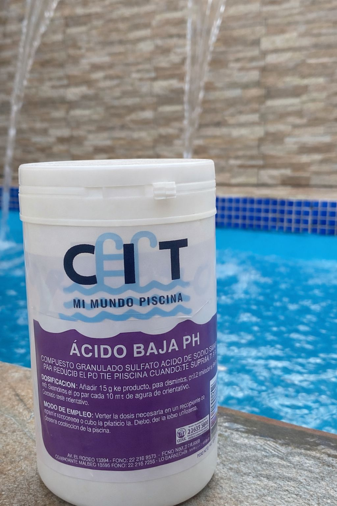

Servicios y Productos de calidad para mantener tu piscina siempre en perfecto estado.

SÓLO VENTAS EN EL VALLE DE ACONCAGUA
Ver todos los productos →
Reparación de bombas, mantención y limpieza.
Cuéntanos tu proyecto y solicita una cotización.
Conoce nuestro compromiso y trabajos reales.
¡De agua verde a cristalina! Conoce una recuperación real de Aqua CIT.
Cotiza la recuperación de tu piscina